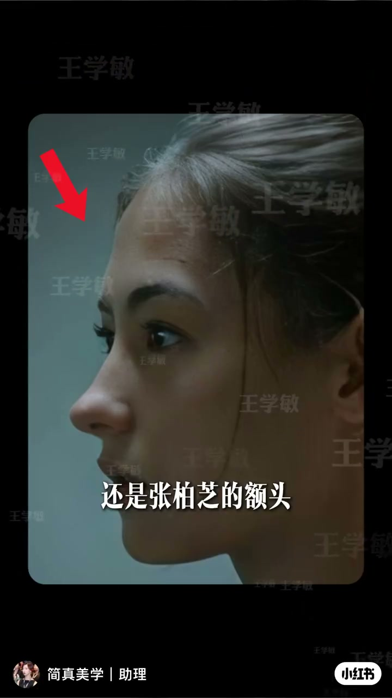
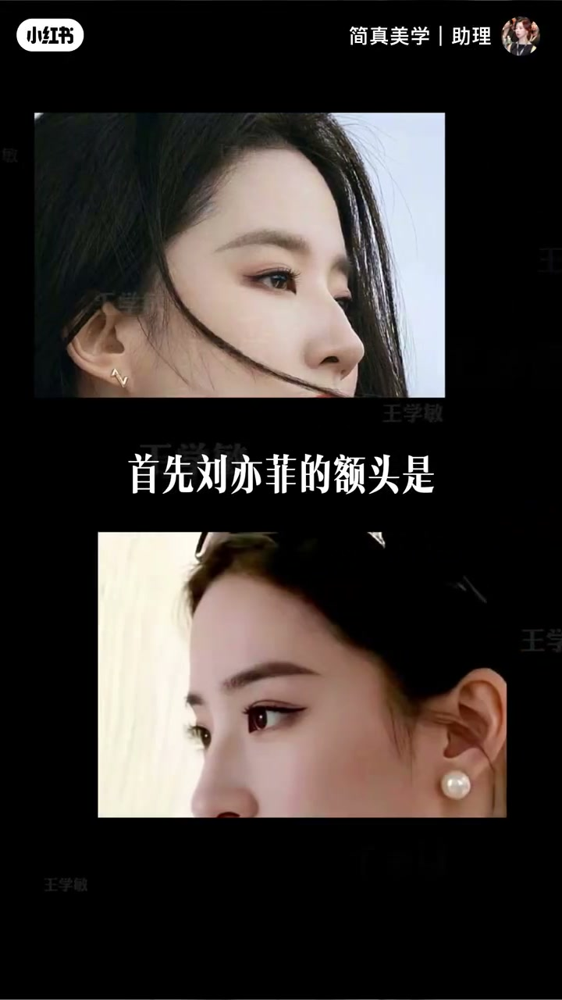
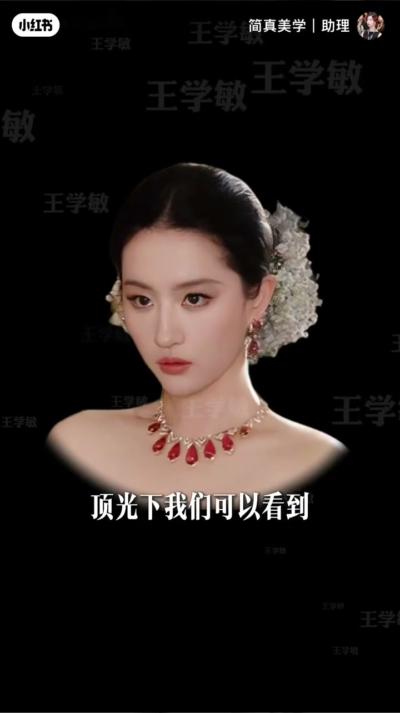
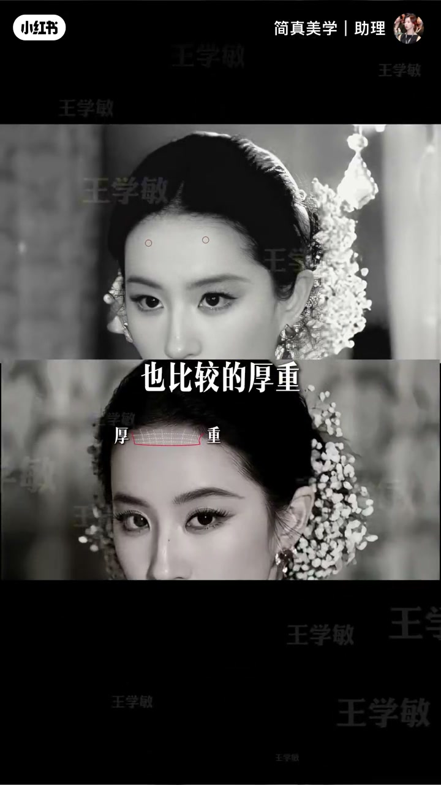
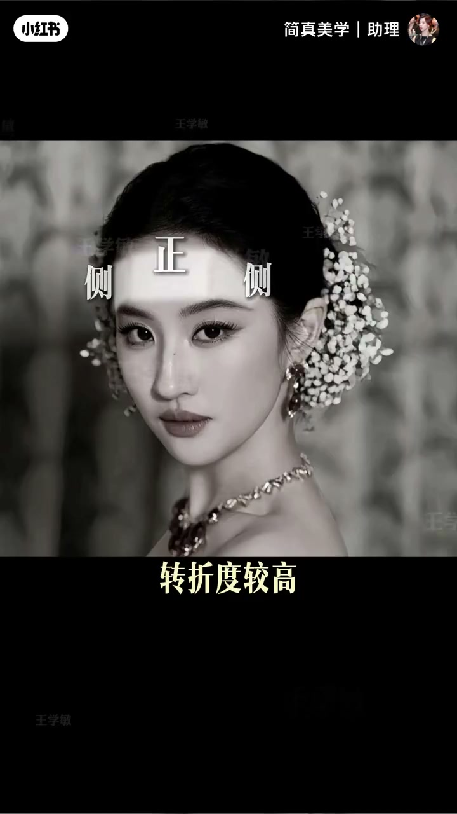
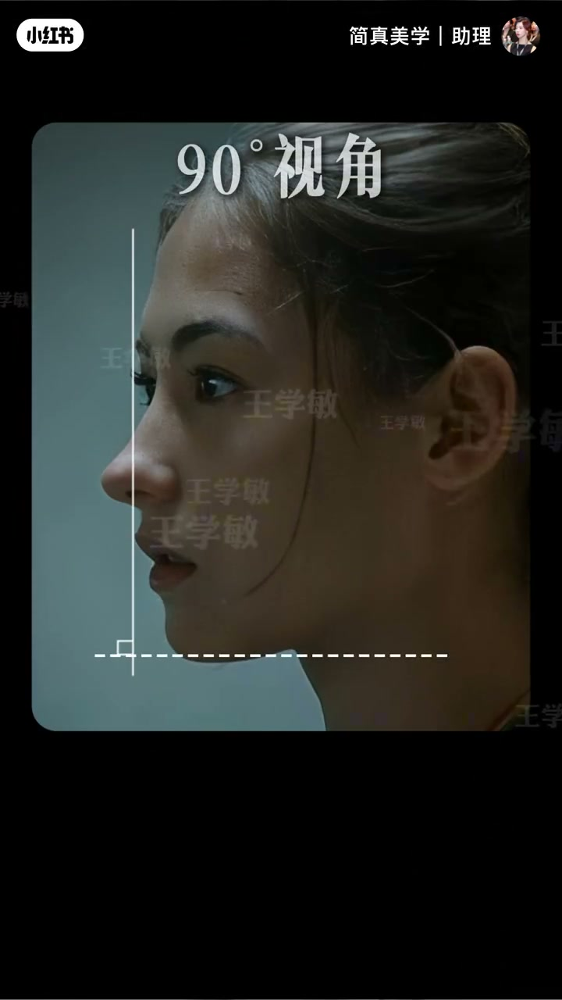
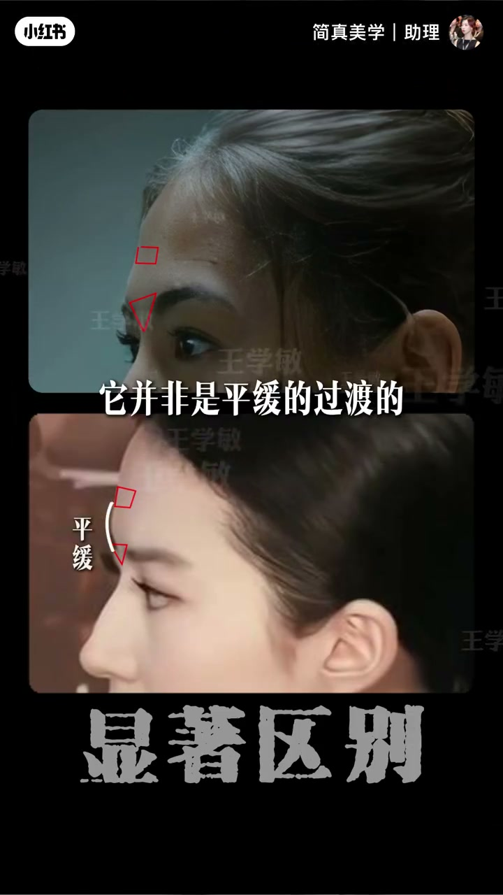

内容要点
一段 63 秒的额头审美分析。对比刘亦菲与张柏芝两款额头：刘亦菲是标准的直面型额头——90度垂直视角、额面垂直，顶光下额结节有高光但较浑圆，与额顶衔接厚重、淡淡额沟不明显，正切面与侧切面转折度较高，关键是天庭与眉心没有明显起伏，整体显得柔和温婉。张柏芝则 90 度观察有清晰角度但不至于后倾，顶光下额结节精致清晰，与花瓣型发际线组合构成跌宕起伏感，淡淡额沟与眉上浅凹显得轻瘦高挺，印堂与眉心衔接处有清晰高低落差，精致明艳。最后提示选哪款取决于自身浓颜还是淡颜基础。
知识结构
刘亦菲的额头 vs 张柏芝的额头，两款有何区别？
90度垂直、额结节浑圆、额顶衔接厚重、天庭与眉心无起伏——柔和温婉。
额结节精致清晰、花瓣型发际线、印堂与眉心有高低落差——轻瘦高挺、精致明艳。
适合哪款取决于自身基础：浓颜还是淡颜。
两款额头的核心差异是起伏度：刘亦菲款=直面型（额面垂直、结节浑圆、无起伏，柔和温婉）；张柏芝款=起伏型（额结节清晰、印堂眉心落差大、发际线花瓣型，轻瘦高挺、精致明艳）。选哪款取决于自身浓颜/淡颜基础——浓颜更衬张柏芝式的起伏精致，淡颜更适合刘亦菲式的柔和温婉。
00:00-00:05开场：两款额头怎么选
开场直接抛问题：「你想要刘亦菲的额头还是张柏芝的额头？」然后引出全片主线——这两个额头看起来有哪些区别。

00:05-00:29刘亦菲款：标准直面型额头
刘亦菲的额头是「标准的直面型的额头」：90度的垂直视角下额面是垂直的。顶光下「额结节有高光的表现但比较浑圆」，跟额顶的衔接部分也比较厚重，有淡淡的额沟但并不明显。
「额头正切面和侧切面转折度较高」，但关键的是「天庭与眉心并没有明显的起伏，就会显得人比较的柔和温婉」。直面+无起伏=温婉气质。




00:29-00:54张柏芝款：起伏型额头
张柏芝 90 度观察「有一定的清晰角度，但并不至于所谓的后倾」。顶光下额结节精致清晰，跟花瓣型的发际线组合「构成了跌宕的起伏感」。
有淡淡的额沟跟眉上浅凹，「显得人轻瘦高挺」。还有一个显著区别点：「印堂和眉心的衔接处并非平缓的过渡，而是有一个清晰的高低落差」，整体「精致明艳」。


00:54-01:03选款依据：浓颜还是淡颜
对于普通人来说，适合哪一款「还是要取决于你自身的基础——到底是浓颜还是淡颜」。UP 主最后引导评论区帮看，把选款落到个人化评估。
完整转录（31段）
以下文本由 Whisper medium 模型自动转录，可能存在少量识别误差，已尽可能修正。
你想要刘一飞的额头还是张博志的额头
这两个额头顾起来有哪些区别呢
首先刘一飞的额头是标准的直面型的额头
90度的一个垂直的视角
他的额面是垂直的
顶光下我们可以看到
他的额节节有高光的表现
但比较浑圆
跟额顶的衔接部分也比较的厚重
有淡淡的额钩
但并不明显
额头的正切面和侧切面转折度较高
关键是一堂眉心并没有明显的起伏
就会显得人比较的柔和温婉
我们来看张博志
90度观察有一定的清晰角度
但并不至于所谓的厚清
顶光下额节节精致清晰
跟花瓣型的发际线组合
它构成了跌宕的起伏感
有淡淡的额钩跟眉上浅凹
显得人轻瘦高紧
还有一个显著的区别点
在于硬糖和眉心的衔接处
它并非是平缓的过度的
而是有一个清晰的高低落差
精致耳鸣艳
对于我们普通人来说
你适合哪一款还是要取决于你
自身的基础到底是浓眼还是淡眼
那么评论区可以帮你看看